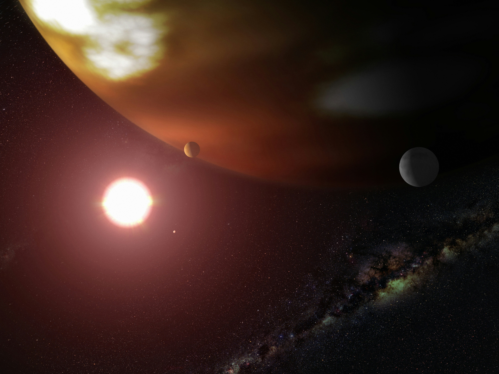
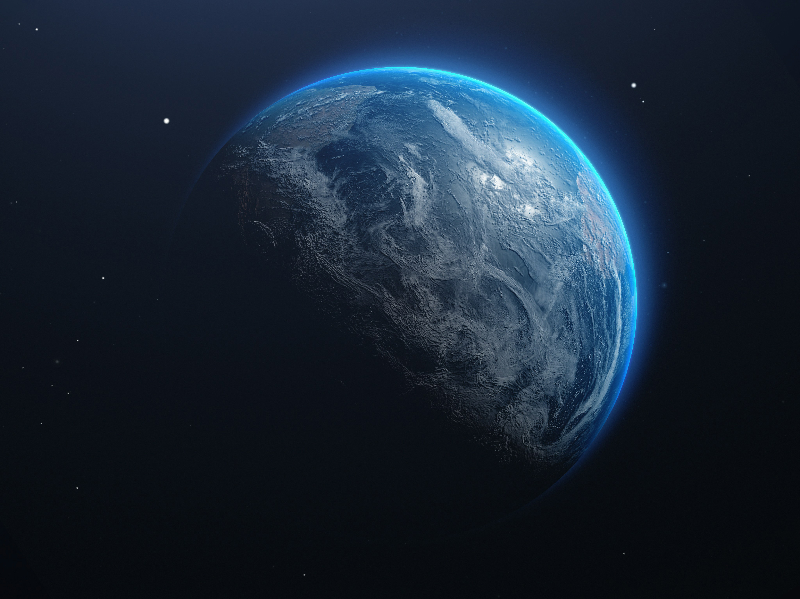
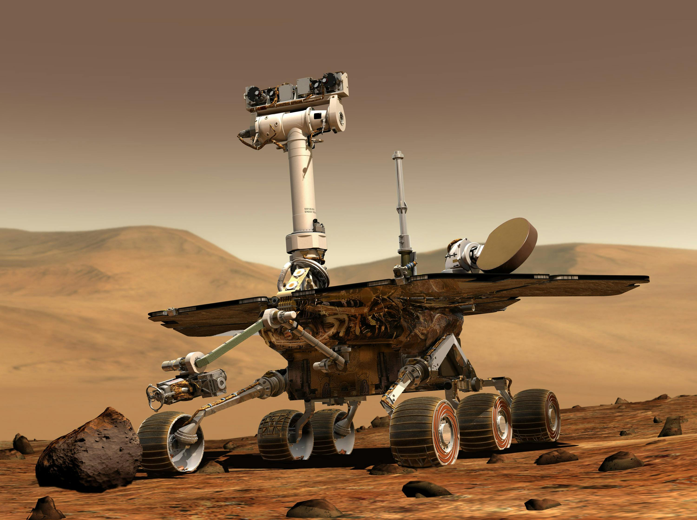

Exoplanet

An exoplanet or extrasolar planet is a planet outside the Solar System. The first possible evidence of an
exoplanet was noted in 1917 but was not then recognized as such. The first confirmed detection of an exoplanet
was in 1992 around a pulsar, and the first detection around a main-sequence star was in 1995.
A different planet, first detected in 1988, was confirmed in 2003. As of 26 March 2025, there
are 5,867 confirmed exoplanets in 4,377 planetary systems, with 985 systems having more than one planet.
In collaboration with ground-based and other space-based observatories the James Webb Space Telescope
(JWST) is expected to give more insight into exoplanet traits, such as their composition,
environmental conditions, and potential for life.
Read More
Astrobiology

Astrobiology (also xenology or exobiology) is a scientific field within the life and environmental
sciences that studies the origins, early evolution, distribution, and future of life in the universe
by investigating its deterministic conditions and contingent events. As a discipline, astrobiology is
founded on the premise that life may exist beyond Earth.
Research in astrobiology comprises three main areas: the study of habitable environments in the Solar
System and beyond, the search for planetary biosignatures of past or present extraterrestrial life, and
the study of the origin and early evolution of life on Earth.The field of astrobiology has its origins
in the 20th century with the advent of space exploration and the discovery of exoplanets.
Read More
MSL

Mars Science Laboratory (MSL) is a robotic space probe mission to Mars launched by NASA on November 26,
2011, which successfully landed Curiosity, a Mars rover, in Gale Crater on August 6, 2012.
The overall objectives include investigating Mars' habitability, studying its climate and geology,
and collecting data for a human mission to Mars. The rover carries a variety of scientific instruments
designed by an international team. The Mars Science Laboratory mission is part of NASA's Mars Exploration Program,
a long-term effort for the robotic exploration of Mars that is managed by the Jet Propulsion Laboratory
of California Institute of Technology.
Read More
Habitability
Planetary habitability is the measure of a planet's or a natural satellite's potential to develop and sustain an environment hospitable to life.
Life may be generated directly on a planet or satellite endogenously. Research suggests that life may also be transferred from one body to another,
through a hypothetical process known as panspermia. Environments do not need to contain life to be considered habitable nor are accepted habitable zones
(HZ) the only areas in which life might arise.
Read More
Habitable Zone
In astronomy and astrobiology, the habitable zone (HZ), or more precisely the circumstellar habitable zone (CHZ), is the range of
orbits around a star within which a planetary surface can support liquid water given sufficient atmospheric pressure.
The bounds of the HZ are based on Earth's position in the Solar System and the amount of radiant energy it receives from the Sun.
Due to the importance of liquid water to Earth's biosphere, the nature of the HZ and the objects within it may be instrumental
in determining the scope and distribution of planets capable of supporting Earth-like extraterrestrial life and intelligence.
Read More
Viking Program
The Viking program consisted of a pair of identical American space probes, Viking 1 and Viking 2 both launched in 1975, and landed on Mars in 1976.
The mission effort began in 1968 and was managed by the NASA Langley Research Center.Each spacecraft was composed of two main parts: an orbiter designed
to photograph the surface of Mars from orbit, and a lander designed to study the planet from the surface. The orbiters also served as communication
relays for the landers once they touched down.
Read More